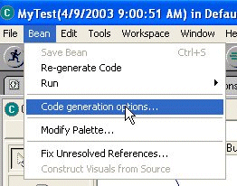
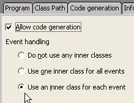

This topic provides information about migrating Java code from VisualAge for Java.
When you make changes to a Java component using the visual editor for Java, the source code is updated to reflect the changes. The source code changes are reflected in set methods that change property values. However, some information used by the visual editor for Java is not stored in properties because it is only required at design time. This information includes the position of a Java bean on the free form surface.
To store this information so that the visual editor for Java can be reopened with the Java bean at the same position, the information is placed in a comment on the line that declares the Java bean. The following statement shows a JFrame component that is positioned at 16,17:
private javax.swing.JFrame ivjJFrame = null; // @jve:visual-info decl-index=0 visual-constraint="16,17"
The comment representing the position of a component is not required, and if no comment is present then a default position is allocated when the visual editor for Java is opened. This default placement only applies to top level Java beans that are not contained within another and does not affect the placement of components within a container. The location of components within a container is determined by the container's layout manager and the component's bounds or constraints.
In VisualAge for Java, the position of the top level Java beans (also referred to as free form parts) is not present in the source code. If you migrate a file that was written using VisualAge for Java's Visual Composition Editor (VCE), default positions are used. If you want to keep the positional information, then you can obtain a migration utility that is loaded into VisualAge for Java. The migration utility regenerates your classes with the position stored in a comment format. To get the utility, download the latest Conversion tool for VisualAge for Java Visual Composition Editor applications from www.ibm.com/support/us/
This migration utility is available as a tempfix that can be installed using VisualAge for Java's FixManager (from Workspace > Tools > FixManager). The utility migrates and exports classes that have been developed using VisualAge for Java's VCE to a format suitable for the visual editor. After installing this patch you can select VCE Code Generation/Export... from the pop-up menu for projects, packages, or classes. Selecting this item launches a wizard that can regenerate the code for classes that have been previously saved with the VCE. The free form positions are saved in the comment format used by the visual editor.
If you have connections, you can first regenerate this code by selecting the Use an inner class for each event VCE code generation option before running this utility. However, some classes will not be able to be converted to this style due to a bug in VisualAge for Java. In this case, you should use the Use one inner class for all events VCE code generation option. The wizard also gives you the option to export the classes to a directory after the code generation is complete. The visual editor for Java events support will not parse the Do not use any inner classes VCE code generation style.


Since the VCE maintained its own model of the Java beans and their property values and relationships, it always regenerated the source in a top-down fashion from this model. Any modifications made by a user to the source were limited to pre-defined user code points in the source delimited by comments //user code begin {1} and //user code end. Also, to indicate that the methods for the Java beans were regenerated each time code generation was performed, the line /* WARNING: THIS METHOD WILL BE REGENERATED. */ was added to the method comment. The migration utility has an option that removes these VCE-generated comments from the exported code (not the source code in VisualAge for Java), as they are no longer applicable outside the VCE. However, once the comments for the user code points have been removed from the source, the user code cannot be used within VisualAge for Java. The reason is that the presence of these comments is what protects the user code from being overwritten.
The visual editor for Java does not use a persistent object model for its Java beans and their property values and relationships, but rather parses the source each time. For this reason, the comments for user code points and for specifying method regeneration no longer apply, and modifications can be made freely to the source code. If the modifications alter the source code structure so that the visual editor for Java can no longer recognize the structure of the Java beans, you might not see them in the Design view or the Java Beans view. However, the source will not be altered to suit the editor's style, and your changes will be preserved.